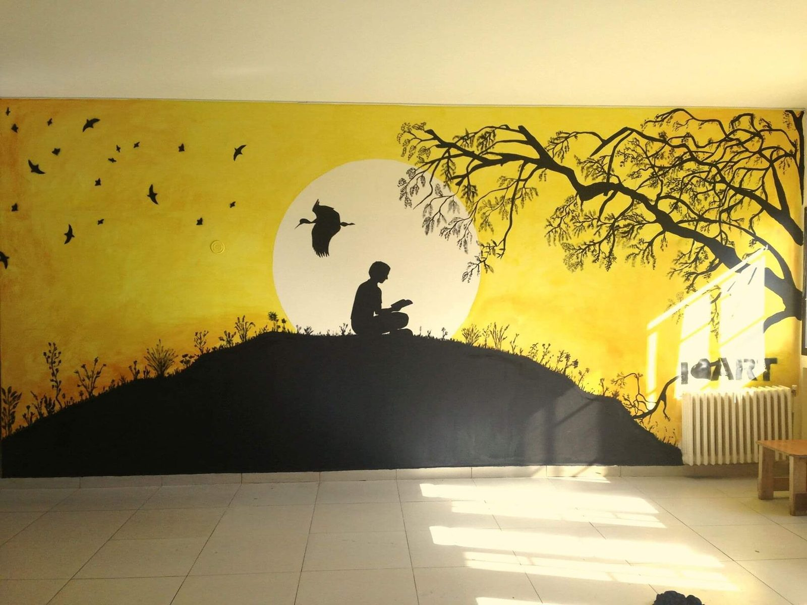

A Lebanon Where Every Wall Tells a Story
I Leaf Art is a local non-profit based in Mtayleb, Beirut. We believe access to beauty and creative expression should not depend on where you live. In too many neighborhoods across Lebanon, public space is gray, neglected, and forgotten.
We change that — wall by wall. Working alongside artists, volunteers, children, schools, and families, we turn ordinary and neglected walls into meaningful public artworks. Each mural is created together with the community it lives in, so the art reflects real voices, identities, and histories.
Our work reaches beyond Beirut into the North and South of Lebanon, proving that public art is one of the most powerful tools for helping people feel seen, connected, and proud of their shared spaces.
Turning sad, ruined, and fading spaces into dreamy and magical ones — I Leaf Art is an art movement applying art therapy in public schools, playgrounds, community centers, and public spaces, indoors and outdoors. We work directly and indirectly with all kinds of populations, especially the underprivileged: the disabled, the incarcerated, orphans, and patients.

Three Pillars of Our Work
Everything we do is built on these three commitments that guide every mural and every partnership.
Empower Artists
We give local artists and volunteers creative freedom, materials, and a platform — and run school and youth workshops that invite the next generation to pick up a brush.
Transform Spaces
We renew public spaces through color — turning bare walls, schoolyards, and neglected corners across Lebanon into vibrant landmarks that residents are proud to call their own.
Build Communities
Through workshops and collaborative design, we bring neighbors together around a shared creative project — strengthening local bonds long after the paint dries.
Milestones Along the Way
From a single wall in Mtayleb to murals across Lebanon — here's how I Leaf Art has grown.
I Leaf Art paints its first wall in Mtayleb, Beirut in December 2012 — founded by Solange El Heybé with one painted wall and a big idea: art should belong to everyone.
We launch our first home rebuild after the Beirut Blast, in August 2020 — inviting children and their families to paint their dreams on their rebuilt walls at Bourj Barajneh Refugee Camp's UNRWA school.
Our work expands beyond Beirut to the Bekaa, North, and South of Lebanon, partnering with local communities in new cities and towns.
We've painted around 200 walls all over Lebanon, with more than 170 people involved as artists, volunteers, and students.
The People Behind I Leaf Art
I Leaf Art is founded and run by Solange El Heybé, based in Mtayleb — supported by a rotating community of volunteer artists, students, and neighbors who join in to plan and paint murals project by project.
Solange El Heybé
Founder